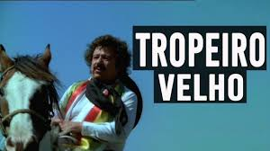

Sentado à beira do fogo
Sentindo o peso da idade
Tão triste o velho tropeiro
Quase morto de saudade
Oitenta anos nas costas
Sempre lidou com boiada
Mas nunca em suas andanças
Deixou um boi na estrada
Agora não pode mais
Seu corpo velho, cansado
Às vezes fica caducando
Começa a grita com o gado
Eira boi, eira boiada!
Se assusta e recobra o sentido
De novo fica calado
Este velho de oitenta
Muito pra mim representa
Ouça o meu verso rimado
Tropeiro velho que tanta tristeza
Esconde o rosto na aba do chapéu
Olhos cravados no fogo do chão
Olha a fumaça subindo pro céu
Quebra de um tapa o teu chapéu na testa
Esqueça os teus oitenta janeiros
Repare os campos, lá vem a boiada
Pela estrada gritando o tropeiro
Tropeiro velho não levanta os olhos
Não tem mais força é o peso da idade
Acabrunhado à beira do fogo
Está morrendo de tanta saudade
Tropeiro velho sou um moço novo
Uma proposta te farei agora
Me dá teu pala, o relho e o chapéu
Bombacha e botas e um par de esporas
Me dá o cavalo e o apero completo
Vou continuar no teu lugar troteando
Tropeiro velho levantou os olhos
Sentado mesmo me abraçou chorando
Beijou meu rosto e foi fechando os olhos
Entregou tudo e morto tombou
Morreu feliz porque vou continuar
As tropeadas que ele tanto amou
Enterrei ele na beira da estrada
Pra ver a tropa que passa e se vai
Leiam na cruz vocês vão saber
Tropeiro velho era o meu próprio pai
Adeus meu pai, tropeiro dos pampas
Teu pensamento cumprirá teu filho
Estou fazendo aquilo que quisestes
Grito a boiada em cima do lombilho
Tropeiro velho hoje descansa em paz
Estou fazendo aquilo que ele fez
Os anos passam também fico velho
Vou esperando chegar minha vez
